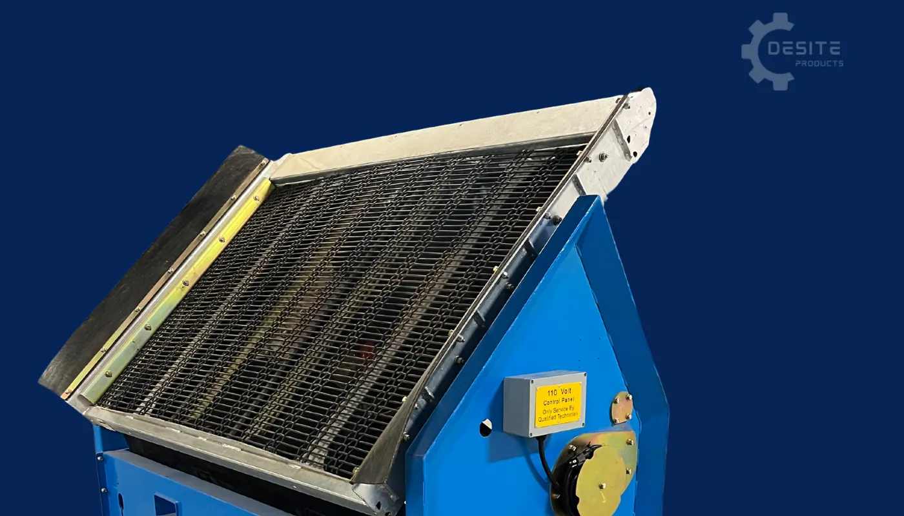
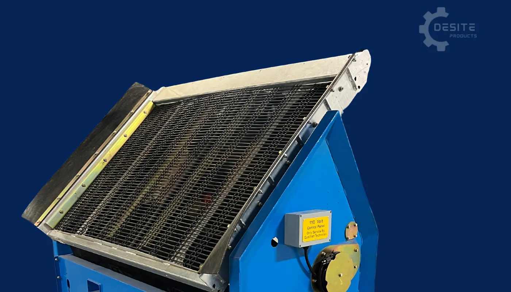
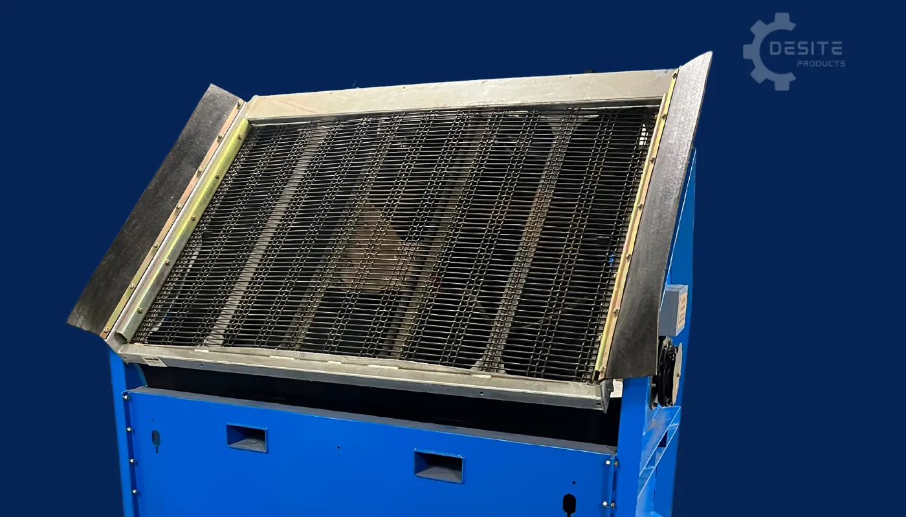
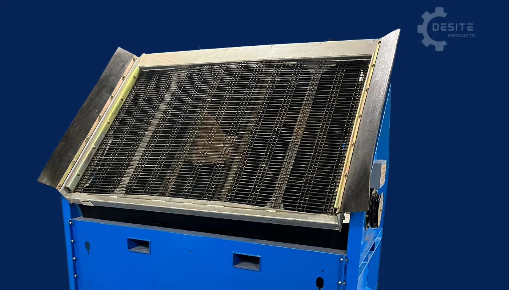

Proscreen SLG-78 Static Grizzly
The 68 Pro Screen is specifically designed for subcompact equipment, making it the ideal screener for medium-scale screening operations. With an impressive hourly production capacity of 10 to 20 yards per hour, this screener is built to handle moderate volumes efficiently. It is compatible with buckets ranging from 56 inches to a maximum of 66 inches, providing versatility for various equipment sizes. Additionally, the 68 Pro Screen offers over 10 different mesh options, allowing you to tailor the screening process to your specific material needs.


See It In Action
Product Description
The SLG-78 Static Grizzly is a compact portable screener perfect for smaller operations. It's easily moved around a worksite at just 544kg, making it ideal for contractors who need portability without sacrificing performance.
This compact screener offers low maintenance operation and is built to last. Despite its smaller size, it delivers impressive screening capacity for its class.
Perfect for mini-excavators, stand-on skid steers and mini tractors. Small footprint, big performance.
Key Features:
- Compact and portable design
- Easily moved around worksite (544kg)
- Low maintenance operation
- Built to last
- Production: 15-20m³/hour
- Perfect for smaller operations
- Ideal for tight spaces
- Designed to be fed by Mini Skidsteers, Sub Compact tractors, and Mini excavators
- Small footprint, big performance
- Affordable entry point to screening
- Perfect for landscaping operations
Bucket Size Compatibility
Bucket Size Range: 56 inches to 66 inches (1.4m to 1.7m)
Compatible Equipment: Mini Skidsteers, Sub Compact Tractors, Mini Excavators
Designed specifically for subcompact equipment, providing versatility for various equipment sizes.
Specifications
Machine Dimensions
- Machine Width: 89 inches (2.26m)
- Machine Height: 74 inches (1.88m)
- Machine Depth: 48 inches (1.22m)
Screen Deck
- Screen Deck Width: 68 inches (1.73m)
- Screen Deck Length: 52 inches (1.32m)
- Screen Deck Surface Area: 27 sq/ft (2.5m²)
- Screen Deck Tilt Angle: 45 to 30 Degrees
Vibratory System
- Vibratory Style System: Dual Eccentric Armature
- Eccentric Rotation Speed: 3600 rpm
- Amperage Draw: 10 each on start up with 5 Amps per motor at 3600rpm
- Eccentric Force Rotation: 760 lbs per revolution
Electrical Power Supply
- New Zealand: 230 Volt (50 Hertz)
- Power Draw: 4 to 5 amps
- Generator Required: 3500-watt portable generator or standard 15 amp circuit
Weight
- Total Weight: 1500 lbs (680kg)
Productivity
- Production Rate: 10 to 20 yards per hour (7.6 to 15.3 m³/hour)
Mesh
- Available Mesh Options: Over 10 different mesh sizes available
- Square Pattern: Various sizes available
- Elongated Soil Mesh: Various sizes available
- Quick and easily changed mesh system
- Double lock crimp weave for strength and stability
- Optional mesh sizes upon request
Assembly
- Comes assembled and ready to use
Screener Features
Rubber Screen Deck Skirts
 

The 68 Pro Screen screen deck is equipped with rubber skirts on each side, designed to catch any stray material that might fall from the bucket and miss the deck. These skirts are made of flexible rubber, allowing them to bend and flex if they are accidentally hit by the bucket, ensuring durability and minimizing damage.
Cantilevered Spring Suspension System


Just like our other models, such as the 108 and 78, the 68 Pro Screen is equipped with the Cantilevered Spring Suspension System. This advanced system allows the smaller screener to handle materials with moisture without any issues. The action and reaction of this system are essential for achieving the desired results in your screening process, ensuring smooth operation and consistent performance even with challenging materials.
Power Box

The Powerbox in the 68 Pro Screen operates with the same reliability and functionality as in our other models. It provides the necessary power to keep the screener running efficiently, ensuring consistent performance throughout your screening operations. Just like in the 108 and 78 models, the Powerbox is designed to be durable and dependable, handling the demands of your screening tasks with ease. The 25ft 10-gauge cord is securely connected to a watertight power box housing bus bar and starting capacitor, powering the vibratory pack up to 3600 RPM with 560 ft/lbs centrifugal force.
Vibratory System
The 68 Pro Screen is equipped with our Dual Eccentric (110 volt) 3600 RPM Vibratory Pack, delivering the same powerful vibratory performance found in our larger 78 Pro Screen model. The motor and eccentric system are sealed away from the elements, making it maintenance-free and highly durable. The 68 Pro Screen vibratory pack draws only 4 to 5 amps and can operate on a standard 15 amp circuit, or it can be powered by a compact 3500-watt portable generator, offering flexibility and convenience on any job site.
Tilting Screen Deck
 

The Tilting Screen Deck, combined with the Cantilevered Spring Suspension System, allows for direct contact between the bucket of your equipment and the screen deck. This feature gives you precise control over the screening process, making it easier to manage materials that are challenging or have a high moisture content. This technology is available across all our models because we understand how crucial it is to maintain efficiency and effectiveness when dealing with complex materials.
Pricing (Estimates)
⚠️ All prices are ESTIMATES only and subject to change. Prices converted from AUD to NZD (minimum 15% adjustment for exchange rate and local costs).
Complete Assembled Unit. Ex Nelson. Price does not include shipping or delivery. Delivery will be arranged with the purchaser and additional charges may apply depending on location.
Additional Options (Estimates):
- Additional Screen Mesh(s): Approx. $1,035 + GST (NZD)
- Bucket lift lugs – pick up the unit with a bucket cutting edge: Approx. $645 + GST (NZD) pair
Please contact us for current pricing and delivery options to your location.
What Can You Screen?
Soil & Organic Materials
- ✓ Sand
- ✓ Topsoil
- ✓ Compost
- ✓ Wood Mulch
Stone & Aggregate
- ✓ Pea Stone
- ✓ Septic Rock
- ✓ Road Gravel
- ✓ Landscape Stone
Recycled Materials
- ✓ Ground Asphalt
- ✓ Crushed Concrete
- ✓ Erosion Control Rock
- ✓ Traction Sand